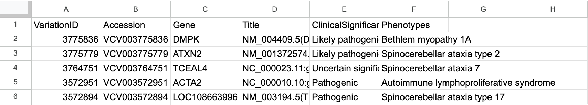
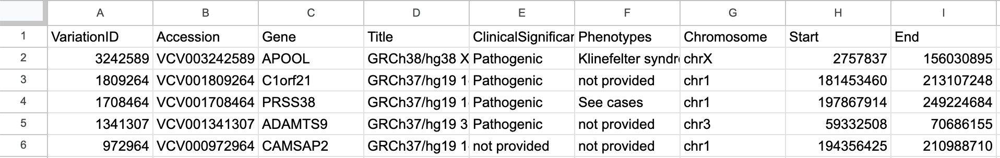
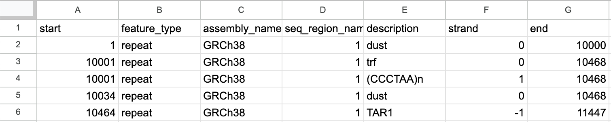
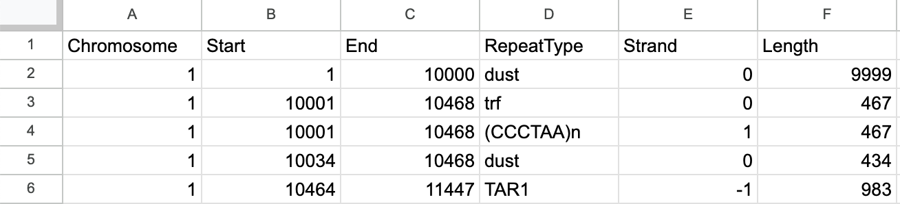
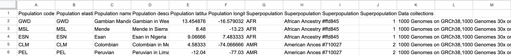
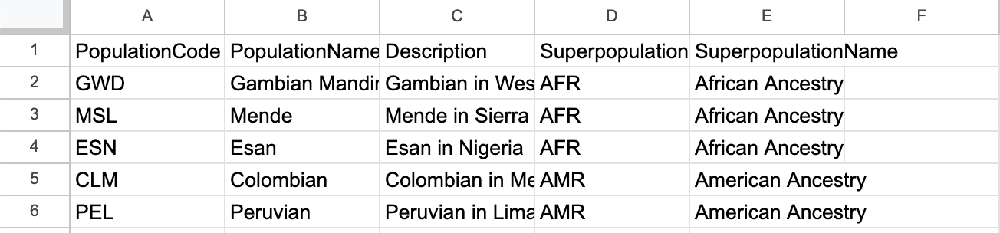
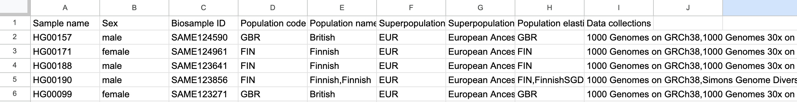
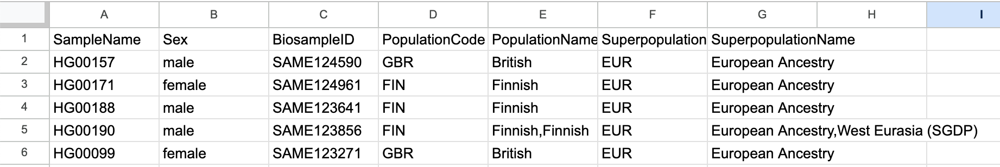

Data Prep / EDA
Data Sources
- NCBI ClinVar (Entrez API) - Variant-level data focused on repeat expansion conditions.
API base: https://www.ncbi.nlm.nih.gov/clinvar/ - Ensembl (REST API) - Gene metadata such as location and transcript count.
API: https://rest.ensembl.org - 1000 Genomes Project Vienna Long-Read Collection - Long-read sequencing data for over 3,000 individuals,
enabling detailed analysis of structural variants across global populations.
Download: https://www.internationalgenome.org/data-portal/data-collection/1kg_ont_vienna
Why These Sources?
These datasets offer a comprehensive view of both pathogenic variation and normal genomic variation across populations. ClinVar provides clinically relevant variant data, Ensembl supports gene-level annotations, and 1000 Genomes adds population context.
Data Snapshots: Before vs. After Cleaning
ClinVar
 Ensembl
 Populations
 Samples
 Cleaning Steps
- Removed missing values and NA/NaN fields in ClinVar and Ensembl data.
- Normalized gene symbols and variant IDs to consistent formatting.
- Extracted useful columns only (e.g., title, accession, phenotype list).
- Filtered 1000 Genomes data to retain only VCF fields related to structural variants.
Link to Datasets
Link to Code
Data Visualizations
A bar chart showing the number of variants in each clinical significance category (e.g., Pathogenic, Likely pathogenic).
This provides an overview of how confidently these repeat expansion variants are linked to disease.
A horizontal bar chart showing the genes most frequently associated with repeat expansion variants.
This helps identify which genes are most clinically relevant in this dataset.
A word cloud built from phenotype descriptions associated with ClinVar variants.
More frequently mentioned traits appear larger, giving a visual summary of affected conditions.
A histogram showing how many phenotypes are linked to each variant.
Most variants are associated with just one or two conditions, while some are more pleiotropic.
A histogram showing the length of tandem repeats found across the genome using Ensembl data.
This highlights the variation in size of repeated sequences, relevant to expansion disorders.
A bar chart showing the number of tandem repeats per chromosome.
Larger chromosomes tend to have more repeats, though some smaller ones are disproportionately affected.
A bar chart showing how many individuals are represented in each superpopulation (e.g., AFR, EUR).
This gives a sense of population diversity in the 1000 Genomes long-read dataset.
A bar chart showing the count of male and female samples in the dataset.
This helps confirm whether the population is roughly balanced by sex or skewed.
A horizontal bar chart showing which specific populations have the most samples sequenced.
This is useful for assessing where statistical power is strongest in population-scale analyses.
A boxplot showing the number of phenotypes associated with each clinical significance level.
Pathogenic variants may be associated with more conditions, suggesting broader clinical impact.